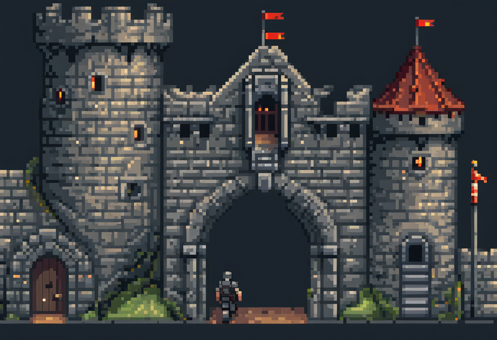

8 VPN & Firewalls

A firewall decides what traffic to let through. Writing a good rule is harder than it sounds, and that difficulty is the lesson.
The last chapter left us with two problems: networks let attackers reach systems they shouldn’t, and they let attackers read traffic they shouldn’t. This chapter is about the two classic defences that answer those problems. A firewall controls what traffic is allowed to pass. It decides who gets to reach what. A VPN protects traffic in transit. It makes the readable wire private again. Both are everyday tools, and both are widely misunderstood. Understanding what each does and does not do is worth more than knowing how to configure either.
8.1 What this chapter covers
By the end you should be able to:
- Explain what a firewall does and the difference between packet-filtering, stateful, and application-layer firewalls.
- Reason about firewall rules: default-deny vs default-allow, and why order matters.
- Explain what a VPN provides (confidentiality and integrity over an untrusted network) and what it does not.
- Describe defence in depth in a network context: no single control trusted alone.
8.2 What a firewall does
A firewall is a checkpoint. It sits at a boundary between networks (classically between a trusted internal network and the untrusted internet) and inspects the traffic trying to cross, allowing what’s permitted and blocking the rest. That’s the whole idea: a gate with a guard who checks each arrival against a set of rules. A firewall does not try to block everything. Firewalls run at network boundaries, on individual hosts, and increasingly in cloud environments, but the job is always the same: decide, packet by packet or connection by connection, what’s allowed through.
The difficulty, and the reason this chapter exists, is that the guard is only as good as the rules they’re given. A firewall doesn’t understand intent; it applies your policy literally. So the security a firewall provides is the quality of the thinking that went into its rules. It’s a recurring truth in this book: the tool is easy, the judgement is hard.
10.1.1.0/24 and 10.1.2.0/24 passes through the firewall’s routes and filters. This is the Firewalls lab from the companion environment.
8.3 The three kinds of firewall
Firewalls differ in how deeply they look at traffic, and the progression is worth knowing because each level trades speed for insight.
A packet-filtering firewall is the simplest: it examines each packet’s headers in isolation (source and destination address, port, protocol) and permits or blocks based on those alone. It’s fast, but it has no memory. Because it looks at each packet on its own, it can’t tell whether a packet is a legitimate reply to a request you made or an unsolicited probe from an attacker; both look the same in isolation.
A stateful firewall fixes that by tracking the state of connections. It remembers that you opened a connection to a web server, so it knows to allow that server’s replies back in, while still blocking unsolicited inbound traffic you never asked for. This connection awareness makes it more useful, and it’s the modern default for most purposes.
An application-layer firewall (or proxy) goes deeper still: it understands the actual protocol (the structure of an HTTP request, for instance) and can make decisions based on the content, not just the addresses. A web application firewall that blocks a malicious-looking request is working at this level. It’s the most powerful and the slowest, because understanding traffic costs more than routing it.
8.4 Writing the rules
The single most important decision in a firewall policy is its default stance, and it comes in two flavours. Default-deny blocks everything and permits only what you explicitly allow: a guest list. Default-allow permits everything and blocks only what you explicitly forbid: a banned list. Default-deny is more secure and is the professional’s choice, for a subtle but decisive reason: with a banned list you can only block the threats you thought of, and attackers make their living on the ones you didn’t. A guest list fails safe: anything unforeseen is denied by default. A banned list fails open, letting the unforeseen straight through. The trade-off is friction: default-deny means every legitimate need must be anticipated and allowed, which is more work and more support tickets. That tension, security versus convenience, is the first question at the end, and it never goes away.
Two more subtleties bite people constantly. Order matters: firewalls evaluate rules top to bottom and usually act on the first match, so a broad “allow” placed above a specific “deny” silently defeats the deny. The packet matches the allow first and is waved through before the deny is ever considered. And specificity matters: one rule written too broadly can open a hole nobody notices, and a large rule set becomes so complex that mistakes hide in it. The cost of a bad rule is not abstract; a single misordered or over-broad line is how real networks end up exposed while everyone believes the firewall has them covered.
8.5 VPNs: a private tunnel over a public network
A firewall controls what can pass. A VPN (virtual private network) protects what’s already passing. It solves the plaintext problem from the last chapter by building an encrypted tunnel between your device and a VPN server: everything you send is encrypted before it leaves your machine and only decrypted at the far end. To anyone listening in between (the attacker on the coffee-shop Wi-Fi, the operator of an untrusted network), your traffic is just ciphertext. The VPN gives you confidentiality and integrity across a network you don’t trust, which is what an untrusted wire otherwise denies you.
10.11.0.0/24 to datacentre 10.11.1.0/24.
Under the hood, a VPN is the cryptography chapter made practical: it uses asymmetric cryptography to establish trust and exchange keys, fast symmetric encryption for the bulk of the traffic, and integrity checks to ensure nothing was altered in transit. If that hybrid scheme sounds familiar, it should. It’s the same pattern that secures the web.
8.6 What a VPN does not do
VPNs are also the most over-sold tool in consumer security, so it’s worth being precise about their limits. The second question at the end turns on this.
A VPN protects the link between you and the VPN server. It does not make you anonymous: your traffic still emerges from the VPN server toward its real destination, and that destination still knows what you did there. It does not secure your device: malware already on your machine is unaffected by an encrypted tunnel. And it does not protect the leg beyond the VPN server. If that onward traffic is unencrypted, it’s exposed again once it leaves the tunnel (which is why a VPN is not a substitute for HTTPS; you want both). A VPN also doesn’t remove trust; it relocates it. You’ve stopped trusting the local network and started trusting the VPN provider, who can now see your traffic. That can be a good trade on hostile Wi-Fi and a bad one with a shady provider, but “a VPN makes you safe” is a marketing line rather than a security fact.
8.7 Defence in depth, again
Neither tool is sufficient alone, and by now you can predict the conclusion. A firewall controls what traffic is allowed but can’t judge the intent behind traffic it permits. Malware happily tunnels out over the same port 443 your firewall allows for ordinary web browsing. A VPN protects traffic in transit but does nothing about what happens at either end. So they join the layers from the last chapter: the firewall decides what’s allowed, the VPN protects what’s in motion, segmentation limits how far a foothold spreads, and monitoring catches the malicious traffic that slips through a permitted door. Each covers a gap the others leave. The answer to “what catches what the firewall misses?” is always another layer rather than a single better wall.
8.8 Where this connects
A firewall and a VPN are the two defences against the scanning, sniffing, and man-in-the-middle attacks of the previous chapter, network security. A VPN’s tunnel is the hybrid encryption scheme from cryptography, deployed. And the monitoring that backs up a firewall feeds the detection stage of incident response in incident and disaster planning.
8.9 Questions to consider
- Should a firewall default to deny or default to allow? Argue the trade-off, and say which you’d choose for a company network and why.
- A VPN “makes you anonymous / makes you safe.” What does it actually protect, and what does it not?
- Give one example of a second layer catching something a firewall alone would miss.